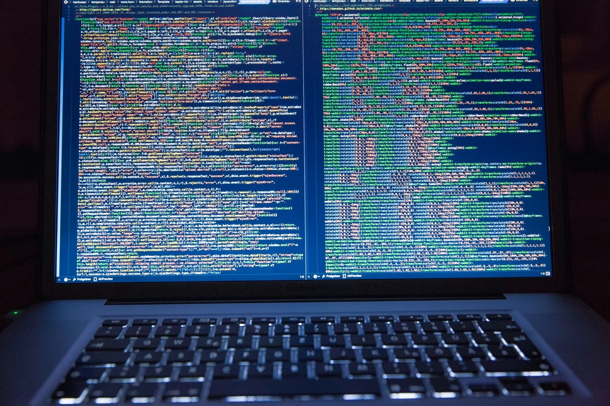

O que são softwares open source?
Em resumo, open source são programas ou apps distribuídos com código-fonte, o que permite que qualquer pessoa com conhecimentos de programação use, modifique, aprimore e até mesmo os compartilhe na internet. Normalmente, o código-fonte é uma parte do software que a maioria dos usuários nunca vê, mas ter acesso a ele permite que programadores realizem alterações e corrijam partes que possam não estar funcionando corretamente.
Como funciona um software open source?
Em geral, os softwares de “código fechado” permitem que apenas os criadores realizem alterações legalmente. Sendo assim, o usuário compra somente uma licença para o uso, como acontece com os populares Adobe Photoshop e Microsoft Office. Enquanto isso, parte dos programas open source é compartilhada em sites públicos. O código-fonte fica disponível para que os usuários o utilizem para qualquer propósito que desejarem, e os programas têm diferentes licenças e termos de uso de produto. Também é importante destacar que nem todos os softwares de código aberto são totalmente gratuitos. Os desenvolvedores podem cobrar uma taxa para liberar o uso do código-fonte ou pela venda do programa.
Por que as pessoas usam os programas open source?
O uso de softwares open source tem algumas vantagens; por exemplo, dá mais controle para que programadores examinem o código e tenham certeza de que não contém nada que não desejam ou alteram algo de que não gostam. Muitos usuários também acreditam que os programas com código aberto são mais seguros e estáveis do que os produtos com “código fechado”, bem como é possível corrigir os problemas sem esperar uma atualização dos criadores. Outro ponto positivo é a comunidade envolvida com os programas open source: programadores, desenvolvedores e outros especialistas em tecnologia que trabalham para melhorar e promover determinados softwares. Por fim, jovens programadores podem usar os produtos para estudar, uma vez que servem como treinamento para compreender o funcionamento dos aplicativos e programas e, assim, possibilitar a formação de bons profissionais.
Quais são as desvantagens do open source?
Os programas com código aberto não estão livres de falhas de qualidade, desempenho ou segurança. Infelizmente, é possível encontrar produtos com bugs ou outros problemas que podem prejudicar a experiência. Outra desvantagem do open source é que muitos softwares não são amigáveis para pessoas sem experiência em programação, pois exigem determinados conhecimentos que não são comuns para os mais “leigos”. Além disso, os programas podem apresentar problemas de compatibilidade e exigir drivers especializados ou até mesmo uma configuração de PC fora dos padrões, por exemplo.
Exemplos famosos de softwares open source
Existe uma lista gigante de produtos e sites de interesse público com código aberto que fazem parte do cotidiano de muitas pessoas. Talvez elas nem imaginam que, na verdade, todos eles são programas open source. Um exemplo disso é o navegador de internet Firefox. Desenvolvido pela Mozilla Foundation, ele conta com diversos colaboradores que ajudam a mantê-lo sempre seguro e estável para os mais de 300 milhões de usuários. Outro exemplo famoso é o sistema operacional Linux. Criado em 1991, o software inspirou muitos desenvolvedores a criarem programas para a plataforma, fazendo que o ambiente de código aberto se ampliasse. Curiosamente, até mesmo a Microsoft já utilizou diversos softwares open source para desenvolver os próprios programas, fato que mostra que até mesmo as megacorporações podem fazer uso desses produtos.